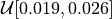
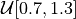
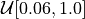

emuPK¶
Emulator for 3D matter power spectrum
emuPK is an emulator for generating the 3D matter power spectrum which can be used in conjunction with a weak lensing likelihood code to derive constraints on cosmological parameters. It is built based on the following parameters and prior range:
Parameters |
Description |
Prior |
|---|---|---|
CDM density |
|
|
Baryon density |
 |
|
Scalar spectrum amplitude |
||
Scalar spectral index |
 |
|
|
Hubble parameter |
|
Neutrino mass (eV) |
 |
|
|
Free amplitude baryon feedback parameter |
|
![\mathcal{U}[0.01, 0.40]](_images/math/a71d5d266f79cf23132122b70a2d9821a7bfe5b1.png)


![\mathcal{U}[0.0, 2.0]](_images/math/79fda1c18fd47b1a8a95e9b58c4e75db0afb08ac.png)
Citation
If you use this code in your research, please cite the following papers: Paper 1 and Paper 2 (in preparation):
@ARTICLE{2020MNRAS.497.2213M,
author = {{Mootoovaloo}, Arrykrishna and {Heavens}, Alan F. and
{Jaffe}, Andrew H. and {Leclercq}, Florent},
title = "{Parameter inference for weak lensing using Gaussian Processes and MOPED}",
journal = {\mnras},
keywords = {gravitational lensing: weak, methods: data analysis, methods: statistical, cosmological parameters, large-scale structure of Universe, Astrophysics - Cosmology and Nongalactic Astrophysics},
year = 2020,
month = jul,
volume = {497},
number = {2},
pages = {2213-2226},
doi = {10.1093/mnras/staa2102},
archivePrefix = {arXiv},
eprint = {2005.06551},
primaryClass = {astro-ph.CO},
adsurl = {https://ui.adsabs.harvard.edu/abs/2020MNRAS.497.2213M},
adsnote = {Provided by the SAO/NASA Astrophysics Data System}
}
Background¶
In this section, we explain briefly how the emulator can be used in a weak lensing analysis and we also provide an example to illustrate the performance of the emulator.
API Documentation¶
Here we provide a brief overview of the code structure. Please see Github for full code structure. We do not cover each code in full detail here.